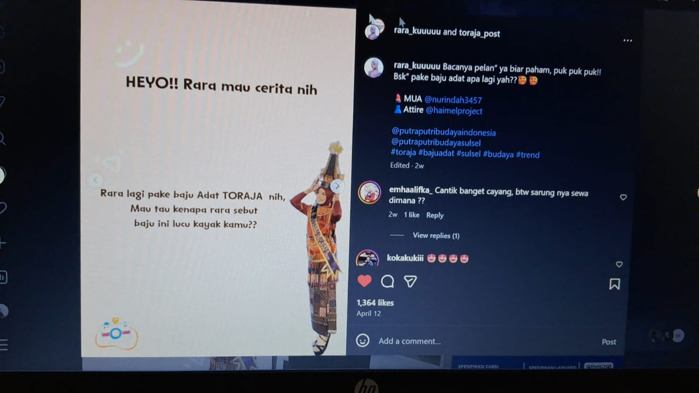
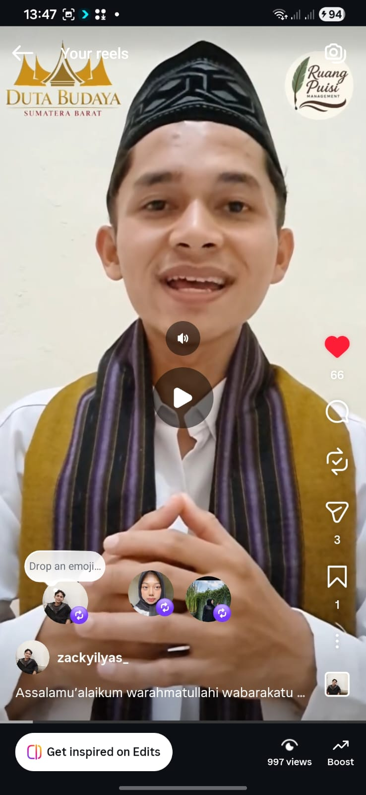

Pelestarian Budaya Minangkabau melalui Teknologi Digital


❖ ❖ ❖
Banyak generasi muda mulai melupakan budaya daerah. Apakah kamu ingin ikut melestarikan budaya Minangkabau melalui media digital?
✨ Budaya Tetap Hidup
Kamu memilih untuk melestarikan budaya. Media sosial dan teknologi digital dapat digunakan untuk memperkenalkan bahasa, pakaian adat, musik tradisional, dan budaya Minangkabau kepada generasi muda.
“Alam takambang jadi guru”
Rumah Gadang merupakan simbol budaya Minangkabau yang mencerminkan kebersamaan dan adat istiadat.
🏛️ Budaya Minangkabau
- Rumah Gadang
- Tari Piring
- Randai
- Saluang
- Bahasa Minangkabau
- Petatah Petitih
📖 Belajar Bahasa Minangkabau
Apo kaba? → Apa kabar?
Denai → Saya
Urang awak → Orang Minangkabau
Waang → Kamu
🗣️ Petatah Petitih Minangkabau
“Dima bumi dipijak, disinan langik dijunjuang”
Artinya: Di mana kita berada, di situ adat dan aturan harus dihormati.
“Alam takambang jadi guru”
Artinya: Alam dan kehidupan dapat menjadi sumber pembelajaran.
🎵 Pelestarian Budaya Digital
Generasi muda dapat melestarikan budaya Minangkabau melalui:
- Video kreatif budaya
- Konten media sosial
- Musik tradisional digital
- Pembelajaran bahasa daerah
Budaya Minangkabau dapat diperkenalkan kembali kepada generasi muda melalui TikTok, Instagram, dan YouTube.
📱 Cara Membuat Konten Budaya
Generasi muda dapat mempromosikan budaya Minangkabau melalui media sosial dengan cara:
- Membuat video tari atau pakaian adat Minang
- Menggunakan musik tradisional pada video
- Membagikan petatah petitih Minangkabau
- Mengenalkan bahasa Minang melalui video pendek
- Mengunggah foto Rumah Gadang dan tradisi daerah
- Membuat konten edukasi budaya di TikTok, Instagram, dan YouTube
Contoh Konten


⚠️ Budaya Mulai Dilupakan


Jika budaya tidak diperkenalkan kepada generasi muda, maka tradisi daerah perlahan akan hilang.
Karena itu, teknologi digital dapat menjadi sarana penting untuk menjaga budaya tetap dikenal.